4. Stability of Closed-Loop Systems
The foremost concern in control-system design is to keep the closed loop stable — and the stability limit itself is a design tool.
Three techniques for the same question
Running examples (each solved by all three methods)
\[ C=\left(\frac{K_mG_cG_aG_p}{1+G_mG_cG_aG_p}\right)R+\left(\frac{G_L}{1+G_mG_cG_aG_p}\right)L \]
Both servo and regulator responses share the same denominator → characteristic equation
\[ 1+G_mG_cG_aG_p=0 \qquad\left(\text{often written } 1+K_cG_0(s)=0\right) \]
General stability criterion. The closed-loop system is stable if and only if all roots of the characteristic equation lie in the open left-half plane (negative real parts). A root on the imaginary axis → marginally stable; any root in the RHP → unstable.
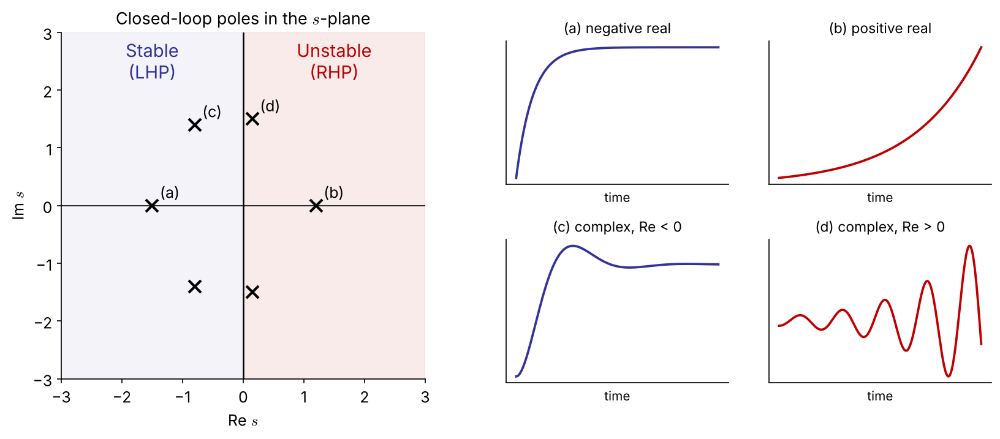
Real part → growth/decay rate; imaginary part → oscillation frequency. Stability depends on the sign of the real part only.
Unstable process \(G_p=\dfrac{K}{s-a}\) \((a>0)\), unity feedback \(G_m=G_a=1\), \(G_c=K_c\):
\[ 1+K_c\frac{K}{s-a}=0 \;\Rightarrow\; s-a+K_cK=0 \;\Rightarrow\; s=a-K_cK \]
Closed loop is stable iff \(\;K_cK>a\)
\[ P(s)=a_ns^n+a_{n-1}s^{n-1}+\cdots+a_1s+a_0,\qquad a_n>0 \]
All coefficients positive is necessary but not sufficient for \(n\ge 3\) → we need the Routh array.
| row | |||
|---|---|---|---|
| \(s^n\) | \(a_n\) | \(a_{n-2}\) | \(a_{n-4}\) |
| \(s^{n-1}\) | \(a_{n-1}\) | \(a_{n-3}\) | \(a_{n-5}\) |
| \(s^{n-2}\) | \(b_1\) | \(b_2\) | \(\cdots\) |
| \(s^{n-3}\) | \(c_1\) | \(c_2\) | \(\cdots\) |
| \(\vdots\) | |||
| \(s^0\) | \(\ast\) |
\[ b_1=\frac{a_{n-1}a_{n-2}-a_na_{n-3}}{a_{n-1}},\qquad b_2=\frac{a_{n-1}a_{n-4}-a_na_{n-5}}{a_{n-1}} \] \[ c_1=\frac{b_1a_{n-3}-a_{n-1}b_2}{b_1},\ \ldots \]
Routh criterion. All roots in the LHP ⇔ every element of the first column is positive. FIX
The number of sign changes in the first column = number of RHP roots.
Results worth memorizing
General 4th-order formulas → Appendix
Case 1 — zero in the first column
Replace the 0 by a small \(\varepsilon>0\), continue, then let \(\varepsilon\to0^+\).
\(P(s)=s^4+s^3+2s^2+2s+3\)
| \(s^4\) | 1 | 2 | 3 |
| \(s^3\) | 1 | 2 | |
| \(s^2\) | \(0\to\varepsilon\) | 3 | |
| \(s^1\) | \(2-3/\varepsilon\to-\infty\) | ||
| \(s^0\) | 3 |
Two sign changes → 2 RHP roots (\(0.41\pm1.29j\))
Case 2 — a whole row of zeros
The roots contain pairs symmetric about the origin (typically \(\pm j\omega\)).
In stability problems a zero row appears exactly at the ultimate gain, and \(A(j\omega)=0\) gives \(\omega_u\) — see Ex 4.2 at \(K_c=60\).
\[ 1+K_c\frac{1}{(s+3)(s+2)(s+1)}=0\;\Rightarrow\; s^3+6s^2+11s+(6+K_c)=0 \]
| \(s^3\) | 1 | 11 |
| \(s^2\) | 6 | \(6+K_c\) |
| \(s^1\) | \(\dfrac{66-(6+K_c)}{6}=10-\dfrac{K_c}{6}\) | 0 |
| \(s^0\) | \(6+K_c\) |
First column positive:
\(-6<K_c<60\quad\) (with a positive controller gain: \(0<K_c<60\))
Same as the 3rd-order rule \(a_2a_1>a_3a_0\): \(\;6\cdot11>6+K_c\).
| \(s^3\) | 1 | 11 |
| \(s^2\) | 6 | 66 |
| \(s^1\) | 0 |
Auxiliary polynomial from the \(s^2\) row:
\[ A(s)=6s^2+66=0\;\Rightarrow\; s=\pm j\sqrt{11} \]
At the stability limit the closed loop has a pair of pure imaginary poles \(s=\pm j\omega_u\), \(\ \omega_u=\sqrt{11}\) — the system oscillates with constant amplitude.
→ This is exactly what direct substitution (\(s=j\omega\)) looks for (§4.3).
\(G_p=\dfrac{1}{s^2+2s+1}\), \(\;G_c=K_c\left(1+\dfrac{1}{\tau_Is}\right)\):
\[ 1+K_c\frac{\tau_Is+1}{\tau_Is(s^2+2s+1)}=0\;\Rightarrow\; \tau_Is^3+2\tau_Is^2+\tau_I(1+K_c)s+K_c=0 \]
| \(s^3\) | \(\tau_I\) | \(\tau_I(1+K_c)\) |
| \(s^2\) | \(2\tau_I\) | \(K_c\) |
| \(s^1\) | \(\tau_I(1+K_c)-\dfrac{K_c}{2}\) | |
| \(s^0\) | \(K_c\) |
\(K_c>0,\ \tau_I>0,\quad \tau_I>\dfrac{K_c}{2(1+K_c)}\)
import sympy as sp
from routh import routh_array # routh.py (handles epsilon & zero-row cases)
s, Kc, tI = sp.symbols('s K_c tau_I', positive=True)
R = routh_array((s+3)*(s+2)*(s+1) + Kc, s) # Ex 4.2
sp.solve([r[0] > 0 for r in R], Kc) # -> Kc < 60
R = routh_array(tI*s*(s**2 + 2*s + 1) + Kc*(tI*s + 1), s) # Ex 4.3
sp.simplify(R[2][0]) # -> tau_I*(Kc+1) - Kc/2
routh_array((s+3)*(s+2)*(s+1) + 60, s) # zero row -> A(s) = 6(s^2+11)syms s Kc tI positive
p = sym2poly_sym(expand((s+3)*(s+2)*(s+1) + Kc), s); % [1 6 11 Kc+6]
R = routh_array(p); R(:,1) % first column
function c = sym2poly_sym(P, s), c = coeffs(P, s, 'All'); end
function R = routh_array(p) % basic version (no special cases)
n = numel(p)-1; cols = floor(n/2)+1; R = sym(zeros(n+1, cols));
R(1,1:numel(p(1:2:end))) = p(1:2:end);
R(2,1:numel(p(2:2:end))) = p(2:2:end);
for i = 3:n+1
for j = 1:cols-1
R(i,j) = simplify((R(i-1,1)*R(i-2,j+1) - R(i-2,1)*R(i-1,j+1))/R(i-1,1));
end
end
endAt the moment a system becomes unstable, a pair of closed-loop poles sits on the imaginary axis. Substitute \(s=j\omega\) and set real and imaginary parts to zero:
Example 4.2A \((j\omega)^3+6(j\omega)^2+11(j\omega)+6+K_c=0\)
\[ \text{Im: } \omega(11-\omega^2)=0\Rightarrow \omega_u=\sqrt{11}=3.32,\qquad \text{Re: } 6+K_c-6\omega^2=0\Rightarrow K_{cu}=60 \]
Example 4.3A With \(s=j\omega\) in \(\tau_Is^3+2\tau_Is^2+\tau_I(1+K_c)s+K_c=0\): Im gives \(\omega_u^2=1+K_c\), Re gives \(K_c=2\tau_I\omega_u^2\) ⇒ \(\tau_I=\dfrac{K_c}{2(1+K_c)}\) — the same boundary as Routh. Direct substitution finds the boundary; Routh gives the region.
\[ 1+K_c\frac{0.8e^{-2s}}{5s+1}=0 \]
\(e^{-2s}\) is not a polynomial → Routh cannot be applied directly. With \(s=j\omega\):
\[ 0.8K_c\,e^{-2j\omega}=-(1+5j\omega) \]
Magnitude: \(\;0.8K_c=\sqrt{1+25\omega^2}\)
Phase: \(\;-2\omega-\tan^{-1}(5\omega)=-\pi\)
Solve the phase equation numerically:
\(\omega_u=0.895\ \text{rad/time}\)
\(K_{cu}=\dfrac{\sqrt{1+25\omega_u^2}}{0.8}=5.73\)
Stable for \(0<K_c<5.73\).
First-order Padé: \(\;e^{-\theta s}\approx\dfrac{1-\theta s/2}{1+\theta s/2}=\dfrac{1-s}{1+s}\;\) ⇒ \(\;5s^2+(6-0.8K_c)s+(1+0.8K_c)=0\) ⇒ \(K_{cu}=7.5\), \(\omega_u=1.18\)
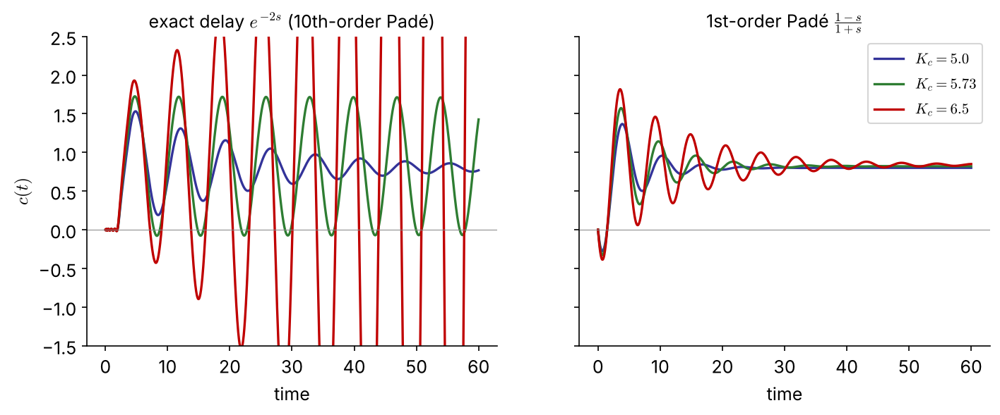
The 1st-order Padé model overestimates the ultimate gain by 31 % (7.5 vs 5.73): at \(K_c=6.5\) it predicts a stable loop that actually oscillates with growing amplitude. Use approximations with care — they err on the unsafe side here.
import numpy as np, control as ct
from scipy.optimize import brentq
# exact: phase condition -2w - atan(5w) = -pi
wu = brentq(lambda w: 2*w + np.arctan(5*w) - np.pi, 0.1, 2.0)
Kcu = np.sqrt(1 + 25*wu**2)/0.8 # 0.895, 5.73
# Pade approximations of e^{-2s}
G = ct.tf(0.8, [5, 1])
for order in (1, 10):
D = ct.tf(*ct.pade(2, order))
gm, pm, wcg, wcp = ct.margin(G*D) # gain margin = Kcu
print(order, gm, wcg) # 1: 7.50, 1.18 10: 5.73, 0.895The ultimate gain and period are the basis of closed-loop (Ziegler–Nichols) tuning — the starting point for the PID term project.
| Controller | \(K_c\) | \(\tau_I\) | \(\tau_D\) |
|---|---|---|---|
| P | \(0.5K_{cu}\) | — | — |
| PI | \(0.45K_{cu}\) | \(P_u/1.2\) | — |
| PID | \(0.6K_{cu}\) | \(P_u/2\) | \(P_u/8\) |
| \(K_{cu}\) | \(P_u\) | ZN-PI \((K_c,\tau_I)\) | |
|---|---|---|---|
| Ex 4.2 | 60 | 1.89 | 27, 1.58 |
| Ex 4.4 | 5.73 | 7.02 | 2.58, 5.85 |
Root locus: the paths traced by the closed-loop poles as a parameter (usually \(K_c\)) varies from 0 to \(\infty\).
\[ 1+K_cG_0(s)=0,\qquad G_0=\frac{Q(s)}{P(s)}=\frac{(s-z_1)\cdots(s-z_m)}{(s-p_1)\cdots(s-p_n)} \]
\(K_cG_0\) is the open-loop transfer function (\(G_0=G_mG_aG_p\) for P control; other controllers contribute to \(G_0\)).
\[ (s-p_1)\cdots(s-p_n)+K_c(s-z_1)\cdots(s-z_m)=0 \]
With first- or second-order processes, no time delay and no RHP zeros, the closed loop is stable for all \(K_c>0\) (Ex 4.6 a–b).
A point \(s\) is on the locus iff \(K_cG_0(s)=-1\) for some \(K_c>0\):
Angle condition (shapes the locus, independent of \(K_c\)) \[ \sum_j\angle(s-z_j)-\sum_i\angle(s-p_i)=(2k+1)\pi \]
Magnitude condition (gives \(K_c\) at that point) \[ K_c=\frac{\prod_i|s-p_i|}{\prod_j|s-z_j|} \]
Check on Ex 4.2 at \(s=j\sqrt{11}\):
Every sketching rule on the next slides follows from these two conditions — and the magnitude condition replaces graphical rlocfind with an exact number.
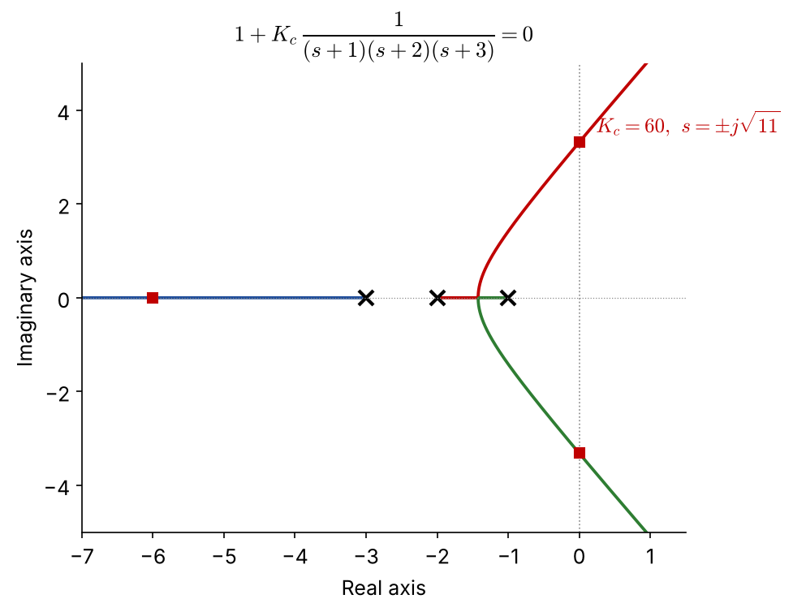
Three methods, one answer: \(K_{cu}=60,\ \omega_u=\sqrt{11}\)
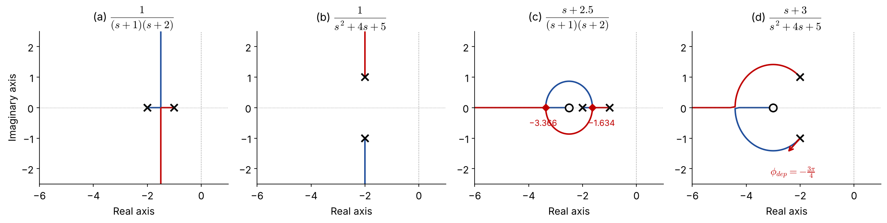
(c) \(\;G_0=\dfrac{s+2.5}{(s+1)(s+2)}\), \(\;P=s^2+3s+2\), \(\;Q=s+2.5\)
\[ \begin{aligned} Q\frac{dP}{ds}-P\frac{dQ}{ds}&=(s+2.5)(2s+3)\\ &\quad-(s^2+3s+2)\\ &=s^2+5s+5.5=0 \end{aligned} \]
\(s=-1.634\) (break-away), \(\ s=-3.366\) (break-in)
(d) \(\;G_0=\dfrac{s+3}{s^2+4s+5}\), poles \(-2\pm j\), zero \(-3\)
Departure from the lower pole \(p_2=-2-j\): FIX
\[ \phi_{\text{dep}}=-\tfrac{\pi}{4}-\left(-\tfrac{\pi}{2}\right)-\pi=-\tfrac{3\pi}{4} \] (upper pole: \(+3\pi/4\) by symmetry)
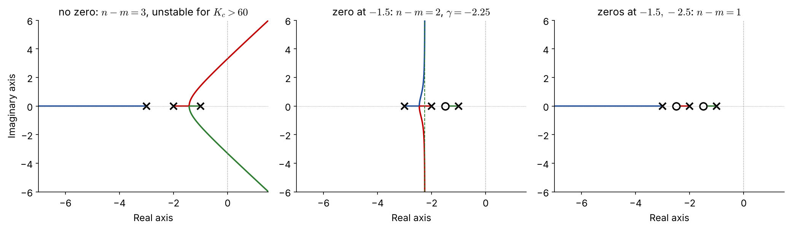
An LHP zero pulls the loci to the left (stabilizing). A PD controller \(K_c(1+\tau_Ds)\) adds exactly such a zero → Problem #1.
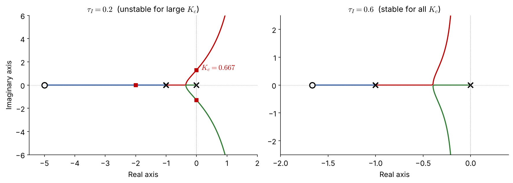
PI adds a pole at the origin and a zero at \(-1/\tau_I\); \(n-m=2\), \(\ \gamma=\dfrac{-2+1/\tau_I}{2}\)
Adding poles pushes loci to the right (destabilizing). Keep the PI zero far enough left (\(\tau_I>0.5\) here).
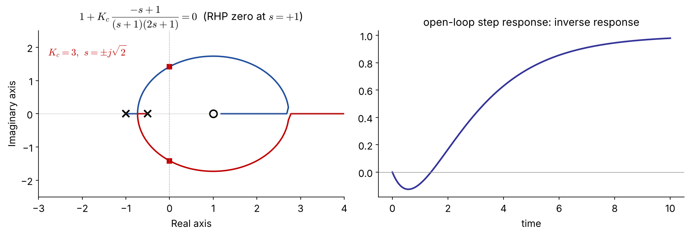
\(1+K_c\dfrac{-s+1}{(s+1)(2s+1)}=0 \Rightarrow 2s^2+(3-K_c)s+(1+K_c)=0\) → stable only for \(0<K_c<3\).
A locus ends at the RHP zero \(s=+1\), so high gain is always unstable — no controller tuning can remove this limit. Typical of inverse-response processes (e.g. drum-level “swell”, some reactors).
Approximate the closed loop by its dominant underdamped pair
\[ s=-\frac{\zeta}{\tau}\pm j\frac{\sqrt{1-\zeta^2}}{\tau},\quad |s|=\frac1\tau=\omega_n,\quad \zeta=\cos\psi \]
NEW \(\;\%OS=100\exp\!\left(-\dfrac{\pi\zeta}{\sqrt{1-\zeta^2}}\right),\qquad t_s(2\%)\approx\dfrac{4}{\zeta\omega_n}\)
\(\zeta\) spec → a ray at angle \(\psi\); \(\ t_s\) spec → a vertical line \(\mathrm{Re}\,s=-4/t_s\)
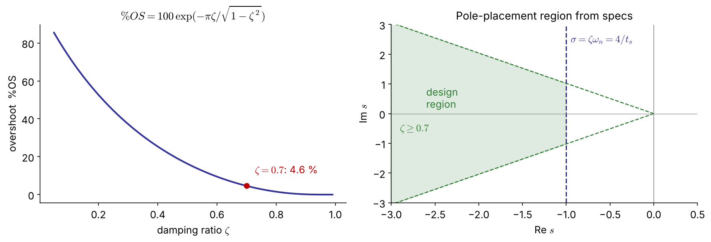
\(G_p=\dfrac{1}{(2s+1)(4s+1)}\) \(\;(K_p=1,\ \tau_1=2,\ \tau_2=4)\): \(\;8s^2+6s+(1+K_c)=0\)
\[ \omega_n^2=\frac{1+K_c}{8},\quad 2\zeta\omega_n=\frac{6}{8} \;\Rightarrow\;\zeta=\frac{3}{\sqrt{8(1+K_c)}} \]
\(\zeta=0.7\ \Rightarrow\ K_c=\dfrac{127}{98}=1.30\) FIX
poles \(-0.375\pm0.383j\), \(\ \%OS=4.6\%\), \(\ t_s\approx11\)
rlocfind gave 1.23 — use the magnitude condition for an exact value.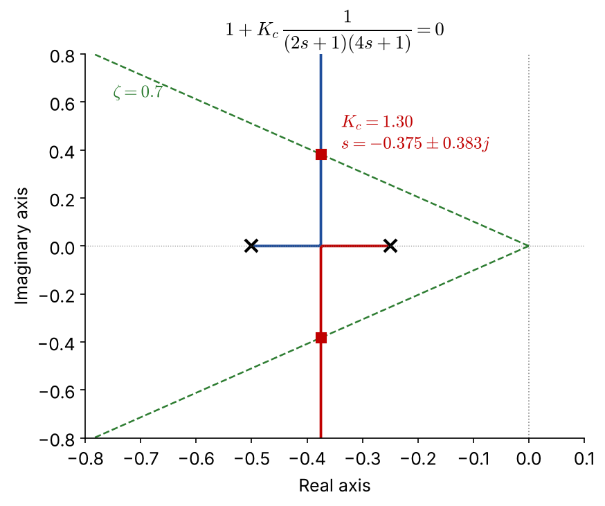
import numpy as np, control as ct, matplotlib.pyplot as plt
G = ct.tf(1, np.polymul([2, 1], [4, 1]))
ct.root_locus_plot(G, grid=True) # s-plane grid incl. zeta lines
zeta = 0.7
# analytic: zeta = 3/sqrt(8(1+Kc))
Kc = 9/(8*zeta**2) - 1 # 1.296
print(Kc, ct.feedback(Kc*G, 1).poles()) # -0.375 ± 0.383j
print(ct.step_info(ct.feedback(Kc*G, 1))) # overshoot 4.6 %First-order process \(K_p=0.5\), \(\tau_p=2\) min, \(G_a=G_m=1\):
\[ 1+K_c\frac{0.5(\tau_Is+1)}{\tau_Is(2s+1)}=0\;\Rightarrow\; 2\tau_Is^2+\tau_I(1+0.5K_c)s+0.5K_c=0 \]
(a) \(\tau_I=3\) min: zero at \(-1/3\) lies between the poles \(0\) and \(-1/2\)
\(\zeta=\dfrac{3(1+0.5K_c)}{2\sqrt{3K_c}}\ \ge\ 1.22\) for all \(K_c\)
→ always overdamped; \(\zeta=0.7\) is not attainable
(b) \(\tau_I=2/3\) min: zero at \(-1.5\) — loci form a circle
\(\zeta=0.7\Rightarrow 0.0625K_c^2-0.485K_c+0.25=0\)
\(K_c=0.555\) FIX: poles \(-0.32\pm0.33j\), \(t_s\approx12\) min
\(K_c=7.20\) FIX: poles \(-1.15\pm1.17j\), \(t_s\approx3\) min
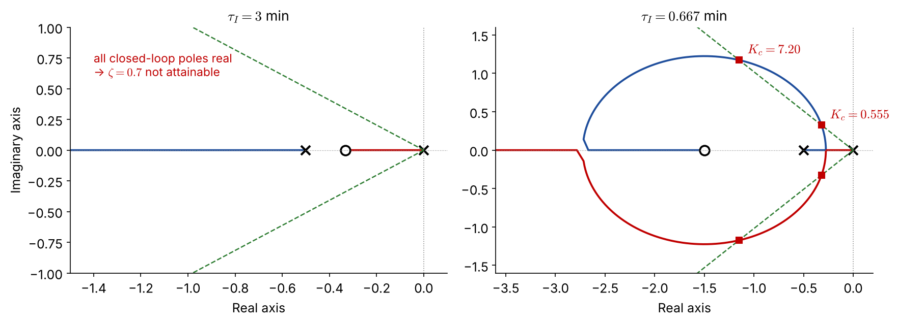
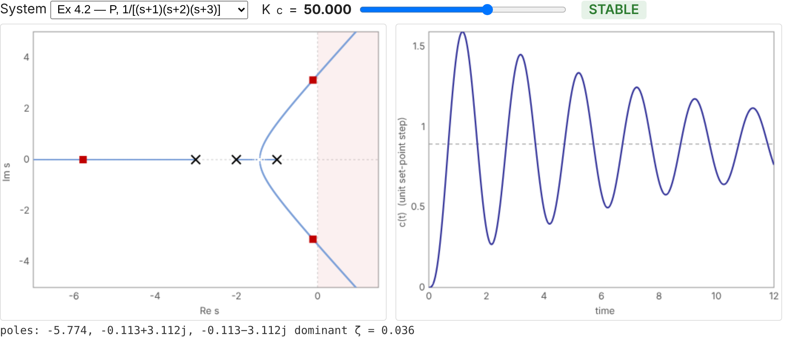
Interactive version: seoultechpse.github.io/ProCon/ch4/ch4_stability.html — move \(K_c\) and switch between Ex 4.2, 4.3, 4.8 and the RHP-zero case.
Toolbox summary
| Task | MATLAB | Python (control, scipy, sympy) |
|---|---|---|
| transfer function | tf(num,den) |
ct.tf(num,den) |
| root locus | rlocus(G), sgrid |
ct.root_locus_plot(G, grid=True) |
| closed loop / poles | feedback, pole |
ct.feedback, .poles() |
| Padé / margins | pade, margin |
ct.pade, ct.margin |
| Routh array | (custom function) | routh.py (sympy) |
| step response | step, stepinfo |
ct.step_response, ct.step_info |
\[ G_p=\frac{2(s+1)}{s(s+2)(s^2+1)},\qquad 1+G_cG_p=0 \]
Show with an analytical technique of your choice that the closed loop cannot be stabilized by a proportional controller.
With a PI or a PD controller (positive gain), write the characteristic equations. Without further analysis, which is more likely to stabilize the system?
Use root-locus plots to illustrate your answer.
Hint for (b): recall what an added zero and an added pole at the origin do to \(n-m\) and to the asymptote centroid.
routh.py\(p(s)=a_4s^4+a_3s^3+a_2s^2+a_1s+a_0\)
| \(s^4\) | \(a_4\) | \(a_2\) | \(a_0\) |
| \(s^3\) | \(a_3\) | \(a_1\) | 0 |
| \(s^2\) | \(b_1=\dfrac{a_3a_2-a_4a_1}{a_3}\) | \(b_2=a_0\) | |
| \(s^1\) | \(c_1=\dfrac{b_1a_1-a_3a_0}{b_1}\) | 0 | |
| \(s^0\) | \(d_1=a_0\) |
Stable ⇔ all \(a_i>0\), \(\;b_1>0\), \(\;c_1>0\), i.e. \(\;a_3a_2>a_4a_1\;\) and \(\;a_3a_2a_1>a_4a_1^2+a_3^2a_0\).